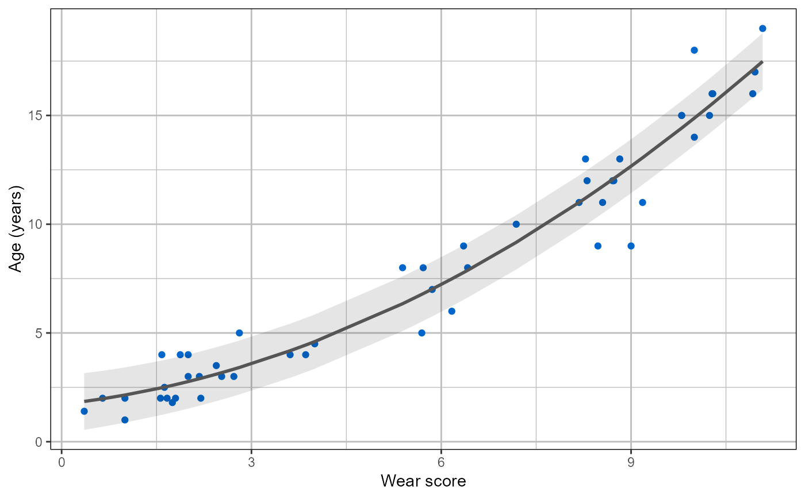

This function can be used to evaluate the viability of a sample for use as a reference population. It provides information on the accuracy of a sample using LOOCV, as well as details on the regression analyses performed on the sample.
BAMSAUR.bff( data, interval = "prediction", level = 0.68, varmod.method = "earth", nfold = n - 1, ncross = 3, ... )
| data | Data frame containing one column for ages-at-death and a second column for the associated wear scores. |
|---|---|
| interval | Character. The type of age interval used. Can be either "prediction" or "confidence" intervals. Confidence intervals are not available for 'earth' class objects. |
| level | Numeric. Determines level of confidence or prediction intervals. Can be any number between 0 and 1 (not inclusive), but 0.68, 0.90, or 0.95 is recommended. To run the function without intervals, enter 0. |
| varmod.method | Character. Method for creating the variance model in the 'earth' function. See 'earth' package for more details. |
| nfold | Numeric. The number of folds to be used in the cross validation. |
| ncross | Numeric. Number of cross validations. Default is set at 3 to reduce computation time. |
| ... | Additional arguments can be passed to the 'earth' function. See ?earth for more details. |
The function automatically returns a summary of the analysis, with the overall accuracy, the average age range (precision), the sum of squares of the predictive residuals (PRESS), the R-squared value, AIC(c), and BIC. It also includes a list containing the following items:
lin.plota plot of the linear regression with prediction/confidence intervals
quad.plota plot of the quadratic regression with prediction/confidence intervals
cub.plota plot of the cubic regression with prediction/confidence intervals
mars.plota plot of the MARS with prediction/confidence intervals
linearclass 'lm' object from the linear regression analysis.
quadraticclass 'lm' object from the quadratic regression analysis.
cubicclass 'lm' object from the cubic regression analysis.
marsclass 'earth' object from the MARS analysis.
lin.datathe data from the linear LOOCV analysis.
quad.datathe data from the quadratic LOOCV analysis.
cub.datathe data from the quadratic LOOCV analysis.
mars.datathe data from the MARS LOOCV analysis.
accuracyA table with the percentage of estimates whose age ranges contain the actual age, the percentage of estimates within 1 year of the actual age, and within 2 years of the actual age.
BAMSAUR.bff uses the "lm" and "earth" functions for the regression analyses. It automatically provides the accuracy of the sample being evaluated, based on whether the actual age of an individual falls within the estimated age range from linear and quadratic regression analyses (using the described LOOCV method). It also provides the mean of the estimated age ranges, as an indicator of method precision, as well as the predicted residual error sum of squares (PRESS), the r-squared values, Akaike information criterion (AIC; AICc for sample sizes below 80), Bayes information criterion(BIC), and generalised cross validation (GCV).
If the slope of the regression is not statistically different (2 standard deviations) from 0 or 1, a warning message will appear.
#the following expression evaluates the sample with 68% prediction intervals as age ranges MBex <- BAMSAUR.bff(MBsimple)#> Calculating... #>#>#> R-squared: 0.93 #> PRESS: 111.12 #> AIC: 183.63 #> BIC: 189.37 #> Accuracy: 84% #> Average range: +- 1.5 years #> (min, max: 1.48, 1.51) #>#>#> R-squared: 0.95 #> PRESS: 77.22 #> AIC: 166.81 #> BIC: 173.57 #> Accuracy: 82% #> Average range: +- 1.25 years #> (min, max: 1.24, 1.3) #>#>#> R-squared: 0.95 #> PRESS: 77.67 #> AIC: 167.85 #> BIC: 176.04 #> Accuracy: 84% #> Average range: +- 1.26 years #> (min, max: 1.24, 1.39) #>#>#> R-squared: 0.95 #> PRESS: 89.07 #> GCV: 1.67 #> Accuracy: 78% #> Average range +- 1.24 years #> (min, max: 0.79, 1.56)#the following code accesses the quadratic plot MBex$quad.plot